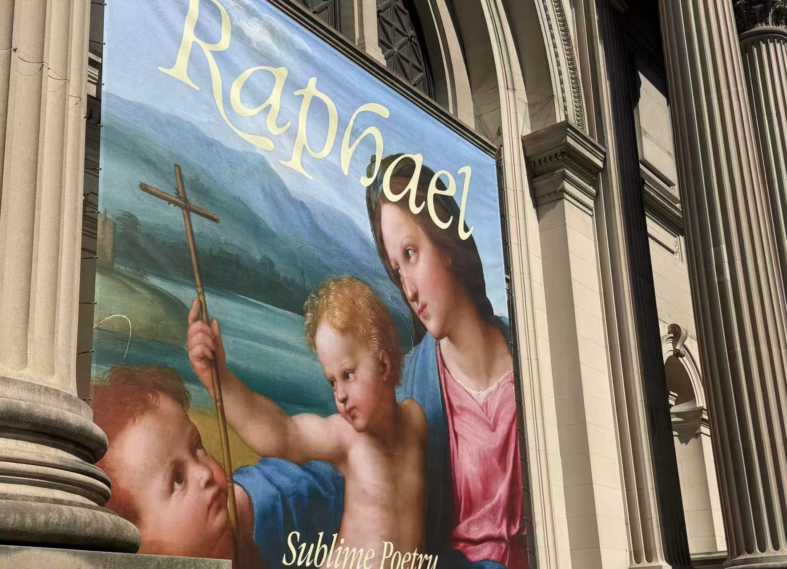

In the MET, I visited the special exhibition of Raphael, a famous painter in the Renaissance period. I looked at his works and was deeply impressed by several of them. I'd like to introduce a couple of works that I have photographed in my collection, and these are manuscripts by Raphael, and there are a lot of different things that are special about these manuscripts and finished paintings, and that's why I'm fascinated by these drafts.